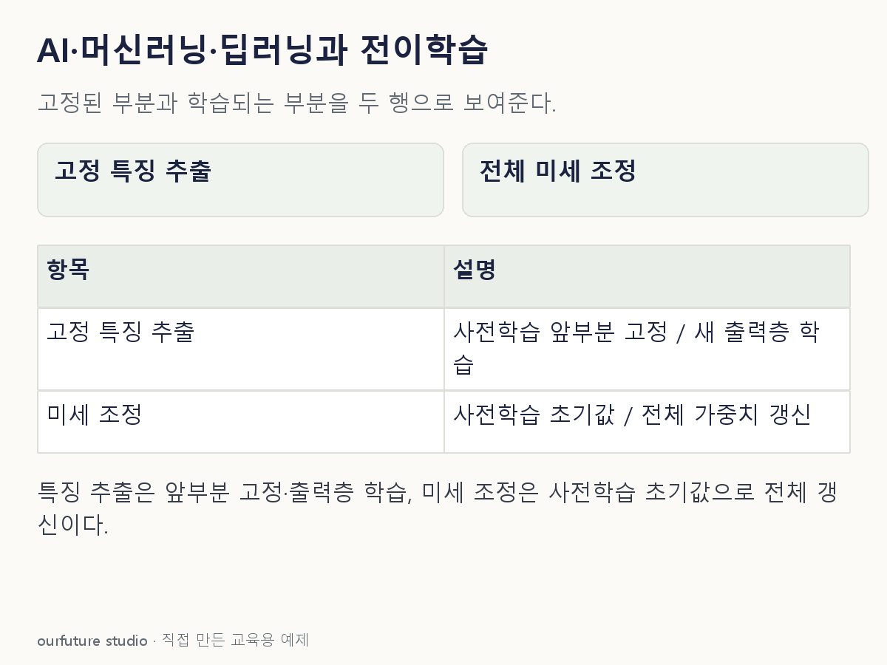

조건을 바꾸며 확인하기
딥러닝 안에 전이학습만 존재한다는 포함 관계를 만들지 않는다. 실제 학습·성능 향상 실험이 아니다.
설명 그림과 비교하기
아래 그림과 표는 고정된 설명 예제입니다. 기본·변형 중 어떤 조건인지 캡션을 읽고, 바꾼 입력의 결과는 계산 칸에서 확인하세요.

같은 문제를 직접 골라 보기
사전학습 신경망의 앞부분을 고정하고 새 상품 분류 출력층을 학습한다.
조건을 더 바꾸면?
사전학습망을 가져온 뒤 전체 가중치를 새 자료에 맞춰 학습하면 전이학습이 아닌가?
변형 풀이 확인
여전히 전이학습의 미세 조정 사례다.
재사용한 표현을 고정해야만 전이학습인 것은 아니다.
AI·ML·DL은 범주, 전이는 지식 재사용 전략.